The above article, which is about a single variable, display some graphs about the distribution.
In one word, if you have a single variable, you want to explore it, you could look at the dot plot, histogram or kernel density estimate curve.
Please note:
First, if the distribution have a single, central peak, then you could use some summary statistics.
Second, if your distribution, which have a single, central peak, is not symmetric or has important outliers, then you should favor median and percentile over mean and standard deviation.
Third, you could use box plot to emphasizes the overall structure of the data sets and make it easy to compare the data sets based on their location and width, but the box plot would loses much information.
So, recommend you to use violin plot, which combines a box plot with the kernel density estimation that gives a more detailed view of the data.
Two Variables : Establishing Relationships
Let’s look at some examples.
Scatter Plots and Smooth lines
Smoothing lines use linear regression line and loess (locally weighted polynomial)
### the relationship between two variables
# smoothing lines use linear regression line and loess (locally weighted polynomial)
library(gcookbook)
library(ggplot2)
ggplot(heightweight, aes(x = ageYear, y = heightIn)) +
geom_point(colour = 'grey60') +
stat_smooth(method = lm, se = FALSE, colour = "blue") +
stat_smooth(method = loess, se = FALSE, colour = 'red') +
ggtitle('Relationship between two variables in R by ggplot2') +
theme(plot.title = element_text(hjust = 0.5, size = rel(1.5), face = "bold"))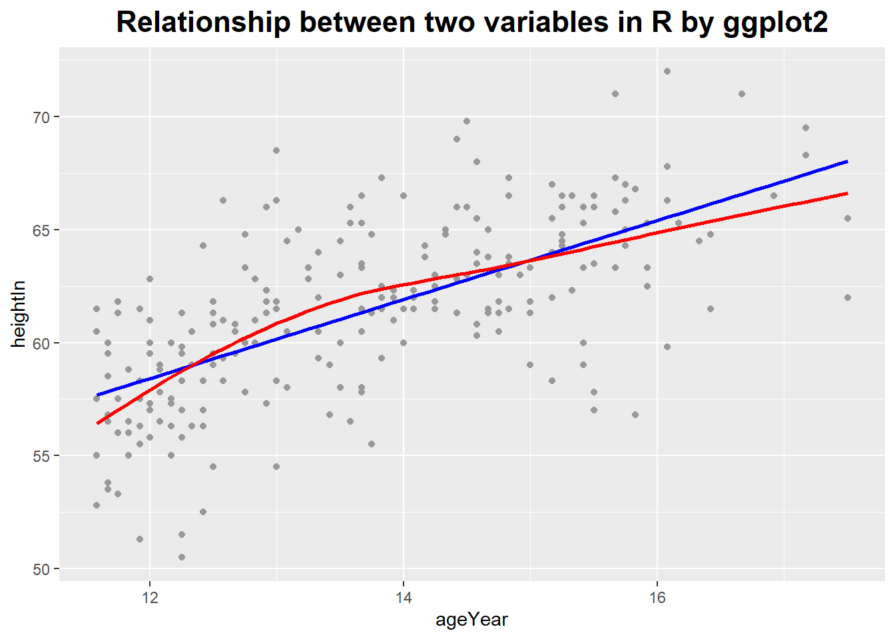
### the relationship between two variables
# smoothing lines use linear regression line
import pandas as pd
import matplotlib.pyplot as plt
import seaborn as sns
import os
tips = pd.read_csv('E:\\git\\blog_rmarkdown\\data\\tips.csv')
plt.close('all')
ax = sns.regplot(x = "total_bill", y = "tip", data = tips, fit_reg = True, ci = None, lowess = False)
sns.regplot(x = "total_bill", y = "tip", data = tips, fit_reg = True, ci = None, lowess = True, ax = ax)
plt.title('Relationship between two variables in Python by seaborn')
plt.show()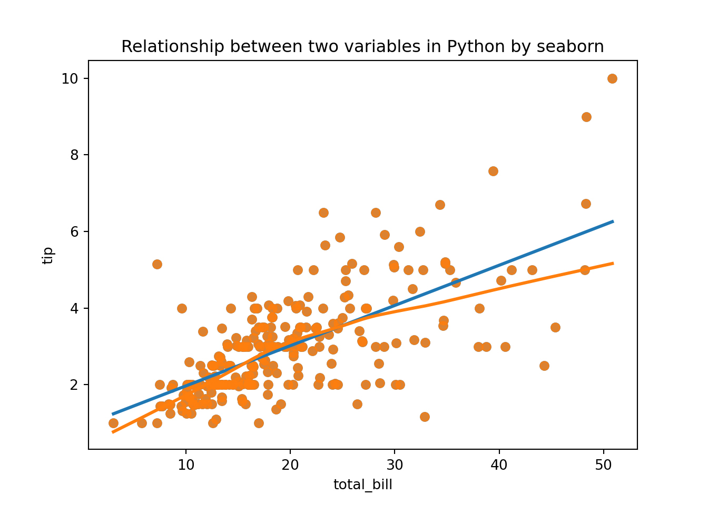
# smoothing lines use logistic regression line
library(MASS)
b <- biopsy
b$classn[b$class == "benign"] <- 0
b$classn[b$class == "malignant"] <- 1
ggplot(b, aes(x = V1, y = classn)) +
geom_point(position = position_jitter(width = 0.3, height = 0.06),
alpha = 0.4, shape = 21, size = 1.5) +
stat_smooth(method = glm, method.args = list(family = "binomial")) +
ggtitle('Relationship between two variables in R by ggplot2') +
theme(plot.title = element_text(hjust = 0.5, size = rel(1.5), face = "bold"))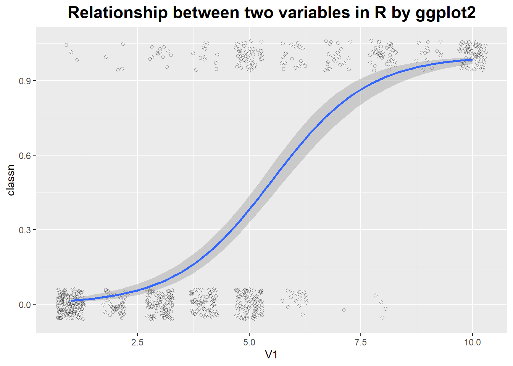
# smoothing lines use logistic regression line
tips["big_tip"] = (tips.tip / tips.total_bill) > .15
plt.close('all')
sns.lmplot(x = "total_bill", y = "big_tip", data = tips, logistic = True, y_jitter = .03)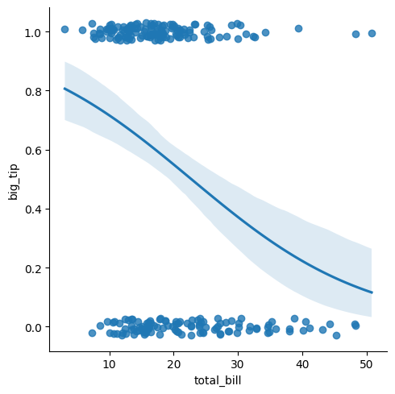
Logarithmic Plots
They turn multiplicative variations into additive ones.
They reveal exponential and power law behavior.
In a logarithmic plot, we graph the logarithm of the data instead of the raw data.
# logarithmic plots
ggplot(Animals, aes(x = body, y = brain, label = rownames(Animals))) +
geom_text(size = 3) +
ggtitle('No logarithmic plot in R by ggplot2') +
theme(plot.title = element_text(hjust = 0.5, size = rel(1.5), face = "bold"))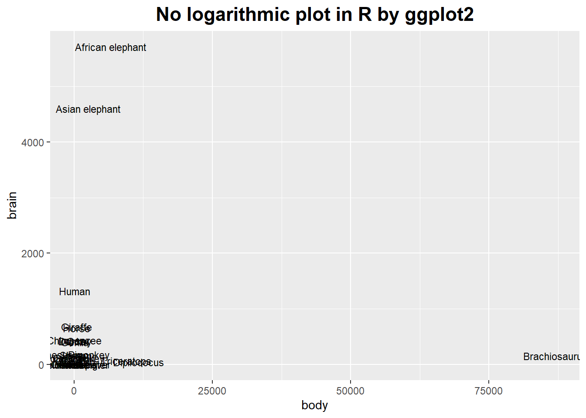
ggplot(Animals, aes(x = body, y = brain, label = rownames(Animals))) +
geom_text(size = 3) +
scale_x_log10() + scale_y_log10() +
ggtitle('Logarithmic plot in R by ggplot2') +
theme(plot.title = element_text(hjust = 0.5, size = rel(1.5), face = "bold"))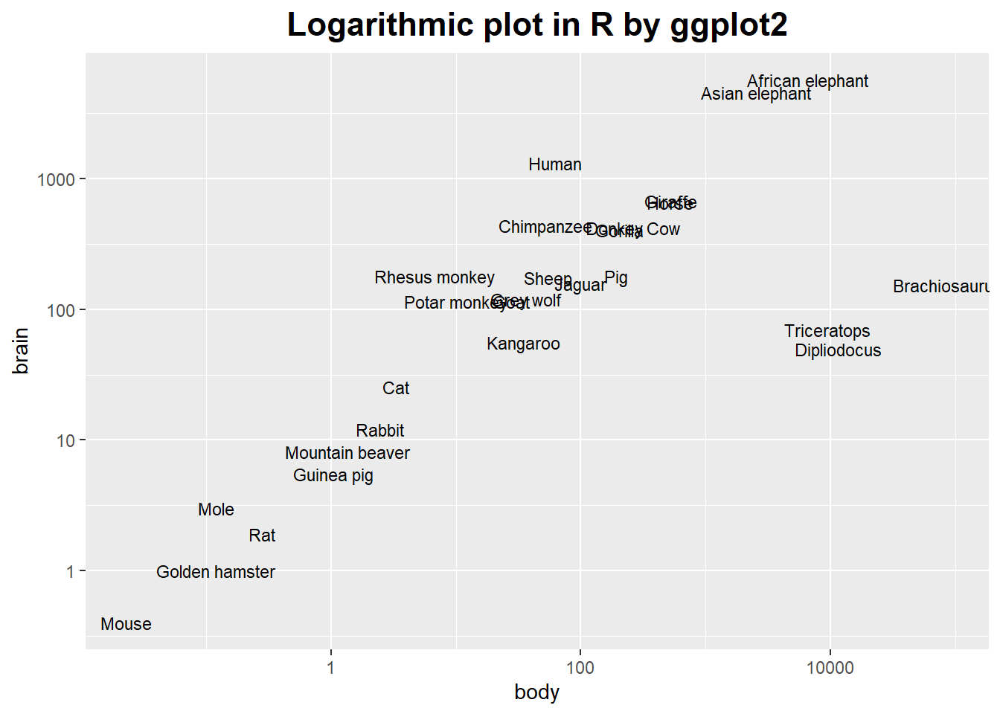
It’s possible to use a log axis for just one axis.
It is often useful to represent financial data this way, because it better represents proportional changes.
ggplot(aapl, aes(x = date, y = adj_price)) +
geom_line() +
ggtitle('No logarithmic plot in R by ggplot2') +
theme(plot.title = element_text(hjust = 0.5, size = rel(1.5), face = "bold"))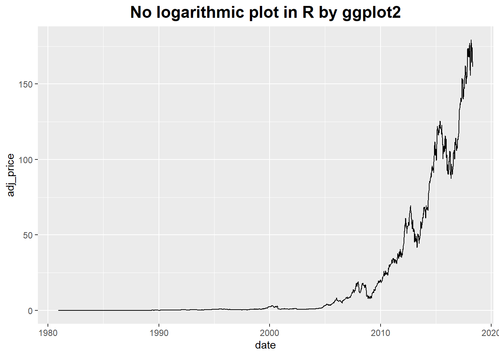
ggplot(aapl, aes(x = date, y = adj_price)) +
geom_line() +
scale_y_log10(breaks = c(2, 10, 50, 250)) +
ggtitle('Logarithmic plot in R by ggplot2') +
theme(plot.title = element_text(hjust = 0.5, size = rel(1.5), face = "bold"))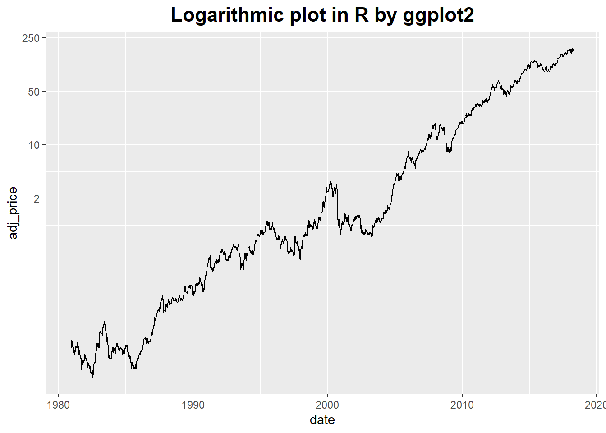
Smoothing methods and logarithmic plots are both tools that help us recognize structure in a data set.
Smoothing methods reduce noise, and logarithmic plots help with data sets spanning many orders of magnitude.
Banking
It does not work on the data but on the plot as a whole by changing its aspect ratio.
ggplot(marathon, aes(x = Half, y = Full)) +
geom_point() +
coord_fixed() +
scale_y_continuous(breaks = seq(0, 420, 30)) +
scale_x_continuous(breaks = seq(0, 420, 30)) +
ggtitle('Different banking in R by ggplot2') +
theme(plot.title = element_text(hjust = 0.5, size = rel(1.5), face = "bold"))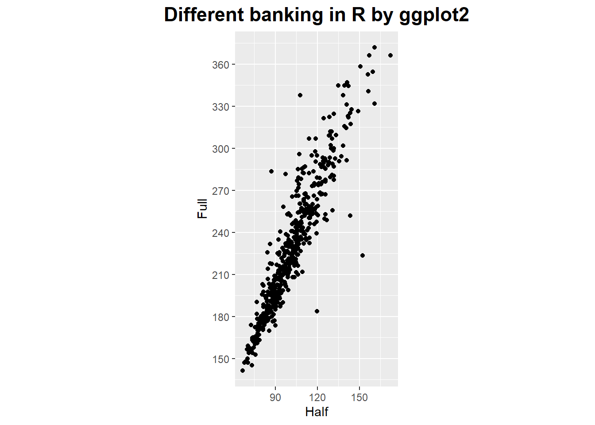
ggplot(marathon, aes(x = Half, y = Full)) +
geom_point() +
coord_fixed(ratio = 1/2) +
scale_y_continuous(breaks = seq(0, 420, 30)) +
scale_x_continuous(breaks = seq(0, 420, 15)) +
ggtitle('Different banking in R by ggplot2') +
theme(plot.title = element_text(hjust = 0.5, size = rel(1.5), face = "bold"))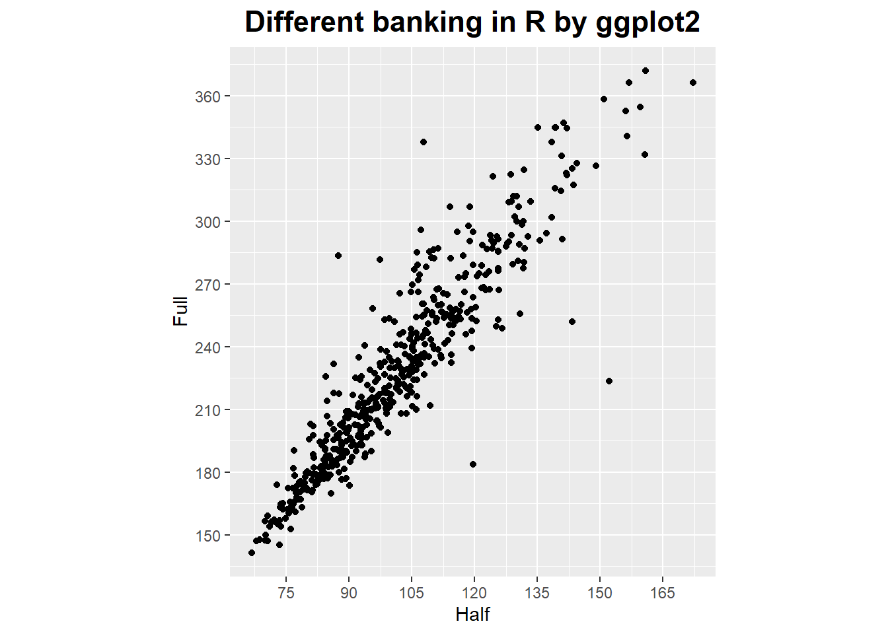
In the book of data analysis with open source tools, the writer gives us some suggestions about how to make a graph.
Let’s see a three-step (maybe four-step) process what the writer said.
First: The basics.
Select proper ranges;
Subtract a constant offset;
Decide whether to use symbols (for scattered data), lines (for continuous data), or perhaps both (connecting individual symbols can help emphasize trends in sparse data sets).
Second: The appearance.
Log plots;
Add a smoothed curve;
Consider banking.
Third: Build a model.
Subtract a trend;
Form the ratio to a base value or baseline;
Rescale a set of curves to collapse them onto each other.
Forth (for presentation graphics only):
Time as a variable: Time-Series Analysis
Every time series have several components, which are trend, seasonality, noise and other.
Given above components, we can summarize what it means to “analysis” a time series.
We have three basic tasks: description, prediction and control.
Assumptions 1:
Data points have been taken at equally spaced time steps, with no missing data points.
If this assumption was violated by any real-world data set, you can try to interpolate the data and re-sample it at equally spaced intervals.
Assumptions 2:
The time series is sufficiently long (50 points are often considered as an absolute minimum).
The exponential smoothing methods are relatively robust even for relatively short series, but somewhere there is a limit.
Assumptions 3:
The series is stationary: it has no trend, no seasonality, and the character of any noise does not change with time.
If this rule is not fulfilled, we may have to identify and remove trend and seasonal components explicitly.
Drastic changes in the nature of the series also violate the stationary condition.
In such cases we must not continue blindly but instead deal with the break in the data, for example, by treating the data set as two different series (one before and one after the event).
Smoothing the time series - removing noise
There are some method to do it, such as moving average, weighted moving average, exponential smoothing (Holt-Winters method) and so on.
# exponential smoothing
dd_past <- window(AirPassengers, end = c(1957, 12))
m <- HoltWinters(dd_past, seasonal = "mult")
dd_pred <- predict(m, n.ahead = 36)
plot(m, dd_pred)
lines(AirPassengers)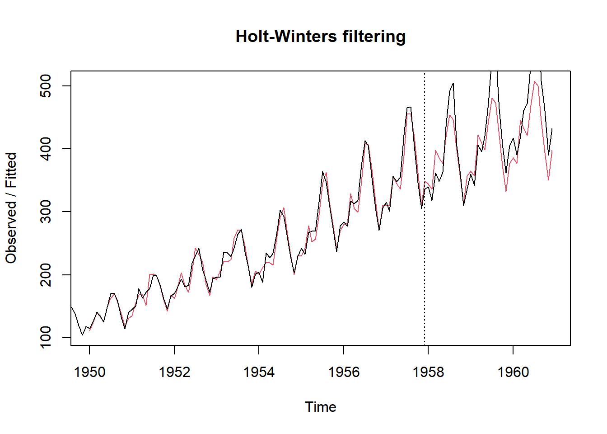
More than two variables: graphical multivariate analysis
The scatter-plot matrix
# scatter plot matrix
c2009 <- subset(countries, Year == 2009,
select = c(Name, GDP, laborrate, healthexp, infmortality))
panel.cor <- function(x, y, digits=2, prefix="", cex.cor, ...) {
usr <- par("usr")
on.exit(par(usr))
par(usr = c(0, 1, 0, 1))
r <- abs(cor(x, y, use="complete.obs"))
txt <- format(c(r, 0.123456789), digits=digits)[1]
txt <- paste(prefix, txt, sep="")
if(missing(cex.cor)) cex.cor <- 0.8/strwidth(txt)
text(0.5, 0.5, txt, cex = cex.cor * (1 + r) / 2)
}
panel.hist <- function(x, ...)
{
usr <- par("usr"); on.exit(par(usr))
par(usr = c(usr[1:2], 0, 1.5) )
h <- hist(x, plot = FALSE)
breaks <- h$breaks; nB <- length(breaks)
y <- h$counts; y <- y/max(y)
rect(breaks[-nB], 0, breaks[-1], y, col = "cyan", ...)
}
pairs(c2009[,2:5], upper.panel = panel.cor,
diag.panel = panel.hist,
lower.panel = panel.smooth)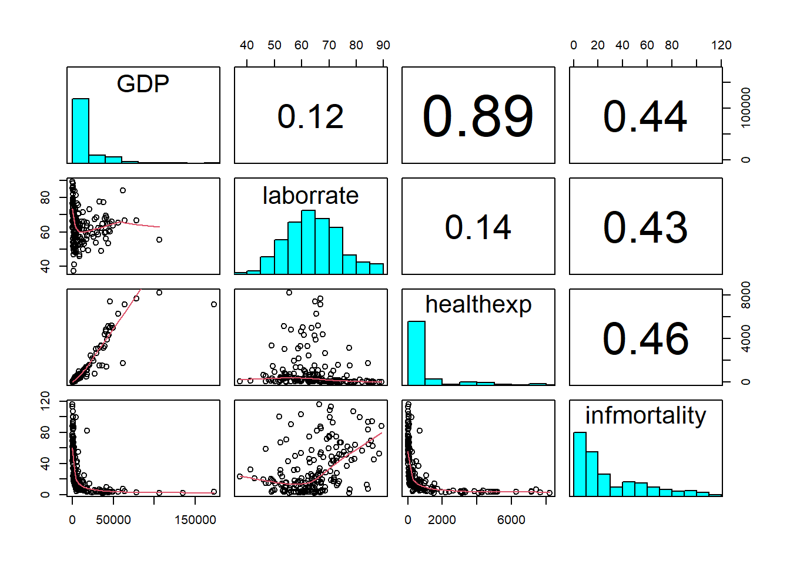
iris = pd.read_csv('E:\\git\\blog_rmarkdown\\data\\iris.csv')
plt.close('all')
sns.pairplot(iris)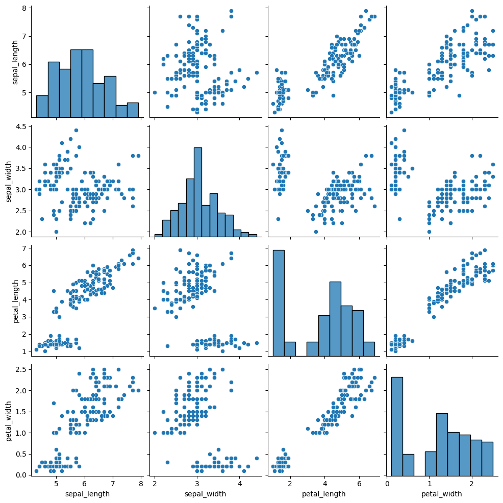
The conditional plots
Conditional plots are especially useful if some of the variables in a data set are clearly “control” variables.
Because it provide a systematic way to study the dependence of the remaining variables on the controls.
# conditional plots
ggplot(mpg, aes(x = displ, y = hwy)) +
geom_point() +
facet_grid(drv ~ cyl) +
ggtitle('The conditional plots in R by ggplot2') +
theme(plot.title = element_text(hjust = 0.5, size = rel(1.5), face = "bold"))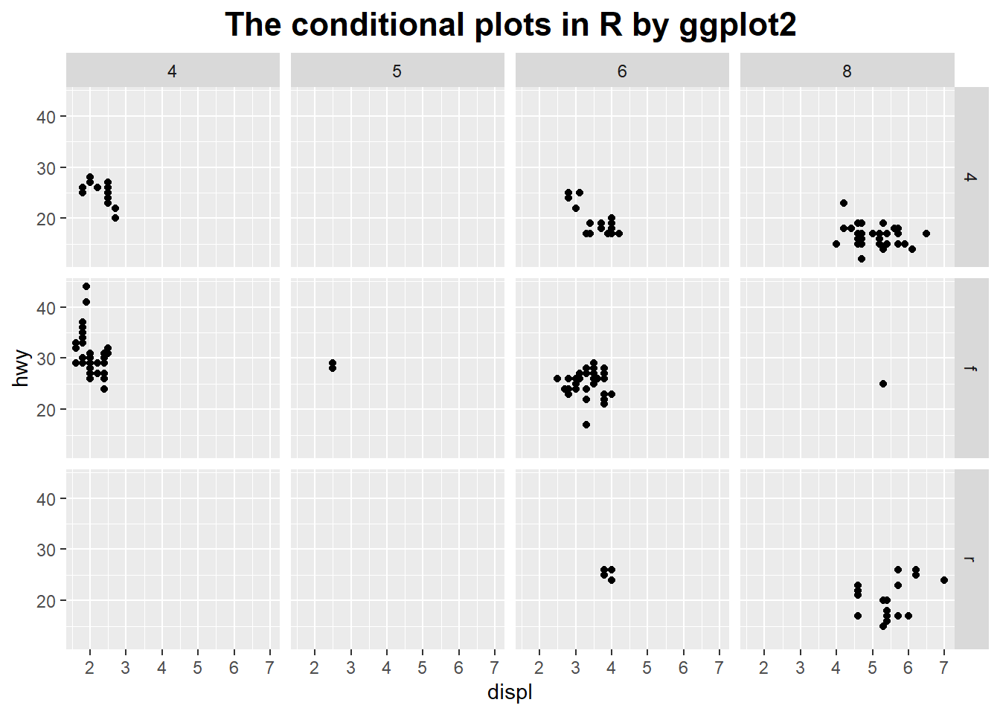
plt.close('all')
sns.lmplot(x="total_bill", y="tip", hue="smoker", col="time", data=tips)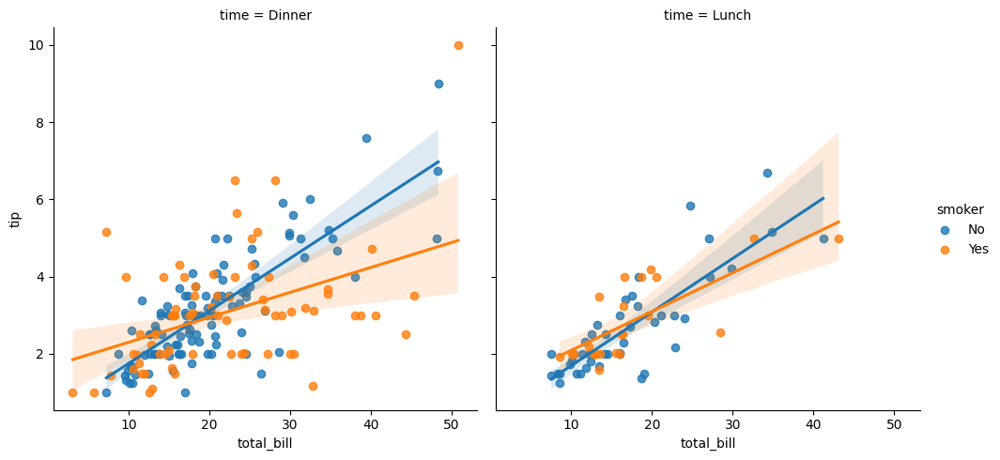
There are also many methods to make a graph, you could explore them right away.
Referenced:
Data Analysis with Open Source Tools
R Graphics Cookbook
Welcome your advice and suggestion!
Just record, this article was posted at linkedin, and have 191 views to November 2021.